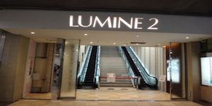

Lumine Shinjuku
If the precious metal
Closed:
The nonstop March February
We will be open.
Location:
〒160-0022
Shinjuku, Shinjuku-ku, Tokyo 3-chome, No. 38, No. 1
TEL:
[Representative] 03-5269-1111
[Visitor telephone consultation room]
0120-302-069
(10:30 to 18:00)
Hours: 11:00 to 22:00
